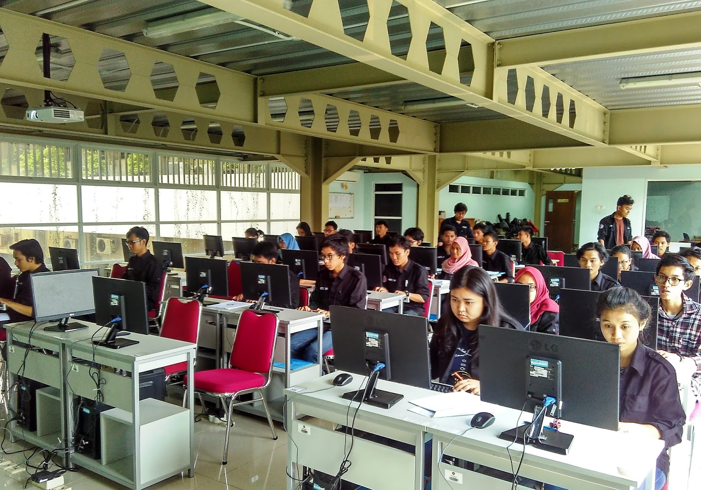

Organisasi mahasiswa Teknik Informatika Universitas Pancasila
merupakan wadah bagi mahasiswa untuk mengembangkan kemampuan,
menyalurkan aspirasi, serta meningkatkan pengalaman dalam bidang
akademik dan kegiatan kemahasiswaan.
Imatika:
Kegiatan Mahasiswa:

Program & Kegiatan Organisasi
Beberapa kegiatan yang dapat dilakukan dalam organisasi mahasiswa
antara lain:
Pengembangan kemampuan teknologi dan pemrograman
Seminar dan pelatihan teknologi informasi
Kegiatan diskusi dan berbagi pengetahuan
Kegiatan sosial dan pengembangan mahasiswa
Alur Pendaftaran Anggota
Tahapan pendaftaran anggota organisasi mahasiswa adalah sebagai berikut:
Mengisi formulir pendaftaran secara online.
Mengumpulkan data dan persyaratan yang diperlukan.
Mengikuti proses seleksi dan wawancara.
Mengikuti kegiatan pengenalan anggota baru.
Istilah & Glosarium Organisasi
Organisasi Mahasiswa
Wadah kegiatan mahasiswa untuk mengembangkan potensi,
kemampuan, dan pengalaman berorganisasi.
Program Kerja
Rangkaian kegiatan yang direncanakan dan dilaksanakan
organisasi dalam suatu periode kepengurusan.
Open Recruitment
Proses penerimaan anggota baru untuk bergabung dalam organisasi.